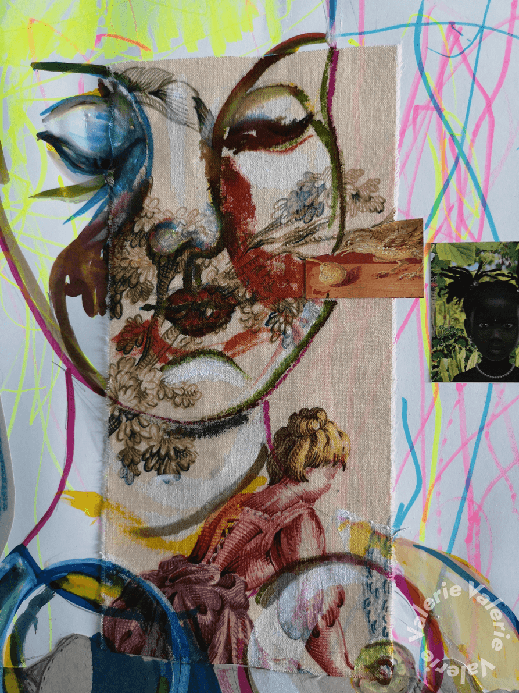
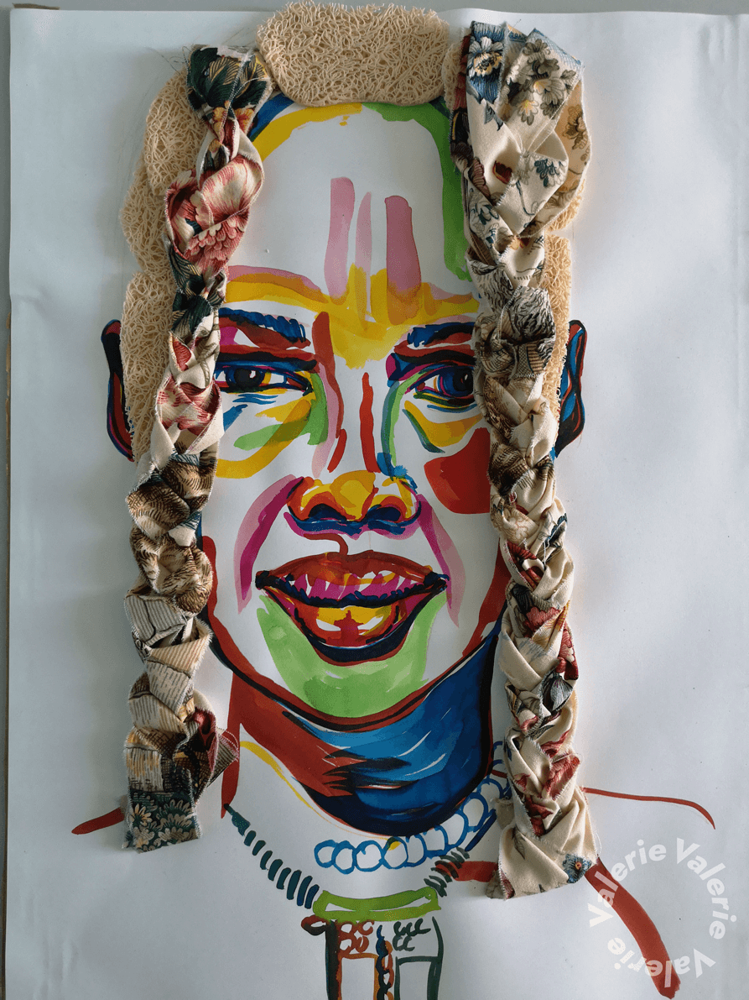
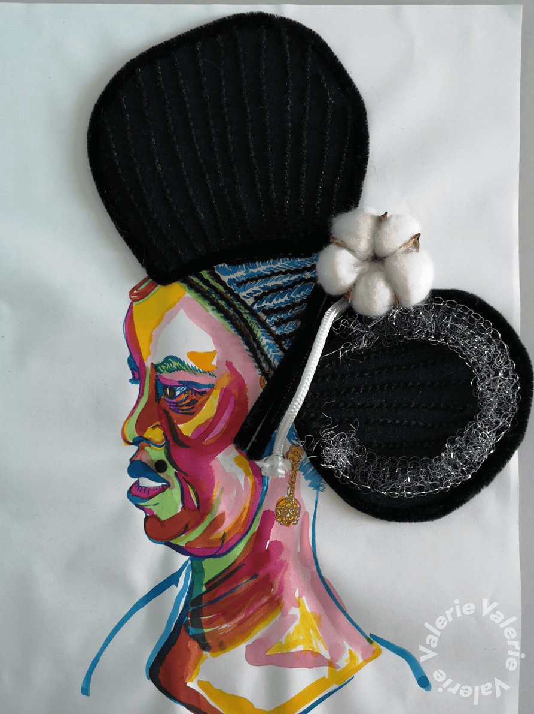

A bad hairday?!
Haar en kapsels als vertrekpunt voor mijn onderzoek voeren de boventoon. Waarbij er eerst een soort aftasten volgt naar wat “haar” bij verschillende culturen en religies betekent. Zowel in rituelen als bij gebruik van bepaalde materialen. Dit aftasten is letterlijk vertaald naar zeer kleurrijke portretten die reflecteren naar in onze ogen vaak exotische uitingen. Maar die in de moderne wetenschap vaak het uitgangspunt zijn voor innovatieve materialen, alternatieve vormen en nieuwe recuperatiematerialen. Deze voorstudies als noodzaak voor het onderbouwen van latere collages en studies naar vorm en materiaal, met elkaar in spanning binnen een ruimte. Waarbij kleuren een belangrijke rol blijven spelen, om juist dat dagdagelijkse als “haar “ te doorbreken. Wat een grote rol speelt in ons dagelijkse leven en vooral bij diegenen die het volledig of gedeeltelijk wegens het spel der genen of andere redenen moeten ontberen. Zoals mensen met de aandoening “Alopecia Androgenetica” waar ik zelf mee te kampen heb. Vrouwen met AGA krijgen vaak te maken met een diffuse vorm van uitval die meestal begint bij de bovenste haarscheiding. En is de haardos van een vrouw nou net niet de parel van haar schoonheid?

Kleur als vorm, vormen in kleur
De verscheidenheid qua vorm die door middel van het combineren van verschillende materialen tot stand komt, lokt interessante invalshoeken op. Soms ziet er men nog de afkomst in, soms vervalt het tot een soort fetisjisme, die op zijn beurt weer nieuwe vragen opwekt. Als symbolen van goddelijke energieën gevangen in een object. Is het materiaal nog belangrijk op den duur? Of komt men er juist van los? Een clash van bijvoorbeeld textiele uitingen in combinatie met keramiek wakkeren net andere gevoelens aan. Het wordt tastbaarder of zelfs aaibaarder of juist niet. Maar het speelse element primeert hierbij wel. Een “spielerei” van kleuren, gewaagd en wars van alle “white cube” conventies. Daarnaast kan een zuiver uit gepuurde vorm ook net geen spatje kleur meer verdragen en vervagen de contouren in elkaar of verrassen ze juist bij hun spel van opbouw, stapeling en combinaties. Daar was het in eerste opzet ook om te doen, als de ingenieuze met zorg opgebouwde en bepoederde kapsels uit de pruikentijd (18e). Het vergullen van iets, soms zelf stinkende zaakjes. Maar steeds de “fashion” van die periode volgend.
Haar als fashion
Wat bij vele disciplines opvalt, is het gebruik van het uitvoerende lichaam als katalysator en plaats voor de creatie en communicatie van de betekenis zelf. Zoals de mode industrie het concept van het lichaam zelf steeds meer omarmd als plaats voor communicatie en betekenis. Zo bestaan mijn werken uit opgebouwde lichamen vol sensuele betekenissen met een ondertoon van zelfspot en ironie.
Het cliché-beeld doorbroken
Niettemin met zorg samengebracht, puttend uit de kracht en inspiratie van vele andere sterke vrouwen die een schat aan durf maar ook liefde tentoonspreiden. Het doorzettingsvermogen om door te gaan en beperkingen om te zetten naar eigen sterktes. Zodat het zéker geen louter feminin cliché beelden worden, maar verwoordingen en beelden scheppen vanuit een oer buikgevoel. Het leven geven aan diepe zielenroerselen zonder te vervallen in beige en grijze standaarden. Soms ongrijpbaar diep vervat in ettelijke kluwen soms zo duidelijk zichtbaar en teer als een stuk translucent porselein. Aan de aandachtige kijker om het haar eruit te filteren.


Harige conversaties
We meten onszelf een identiteit aan met onze haren. Denk maar aan punkers, of de Sumoworstelaars die aan het eind van hun carrière symbolisch hun knot laten afknippen, tot wereldkampioenschappen voor de langste snor. Men moet al geen voetballiefhebber te zijn om toch al gehoord te hebben van een Fellaini of een Ronaldo. Alsook in de duistere krochten van onze geschiedenis waar bergen haar de enige droeve herinnering zijn aan zovelen die totaal ontmenselijkt hun leven lieten in de concentratiekampen. Het is een expressiemiddel bij uitstek als opsmuk maar ook om zeer tribaal te tonen bij welke familie of groep men behoort. En dat gaat héél ver met haarsieraden, extension of zelfs pruiken om te kunnen voldoen.
Haar als statussymbool
Bij primitieve volkeren wordt menselijk haar reeds lang gebruikt als sierelement. Zo zijn de Naga, een groep die leeft in Noordoost-India en Noordwest Birma, nog steeds actieve kannibalen. Ze maken gebruik van tatoeages om zichzelf te beschermen tegen andere groepen en vreemden. Zo hebben vrouwen méér tatoeages dan mannen omdat zij kwetsbaarder zijn. Maar in de winter dragen zij kledij om zich te beschermen voor de kou en zijn de tatoeages niet meer zichtbaar zodat ze hun functie verliezen. Daarom worden gelijkaardige symbolen verweven in de kledij en hoofddeksels, waarvan sommigen uitsluitend met mensenhaar zijn geknoopt. Mensenhaar als hoogste statussymbool.
“The hair crest” Fulani women of northern Guinea indicate their social status with elaborate hairstyles adorned with cowrie shelss and amber (first brought tot he area centurie sago by caravans crossing the sahara.) To create the style above, the woman mold their hair around a bamboo support throug wicht he tread additional strands to complete het cockcomb effect. The thin braids of hair tied under the woman’s chin problaby signify that she has given birht to her first child. (bron magazine Colors)

Filosofische bedenking
Zijn dit de vonken van de kunstenaars waar de kunstenaars op teren, of waardoor zij verteert worden? ‘ De natuur is vanbinnen’ zegt Cézanne. Kwaliteit, licht, kleur, diepte, die daar vóór ons zijn, zijn daar slechts doordat ze een echo in ons lichaam wakker roepen. “Kunnen wij dus zeggen dat er een blik vanbinnen is, een derde oog dat de schilderijen en zelfs mentale beelden ziet, zoals men wel eens heeft gesproken van een derde oor dat de berichten vanbuiten opvangt dwars door het geruis dat ze in ons teweegbrengen?[1]
Dit creëert toch een zékere gelaagdheid. Hoe anderen ons zien, wat wij zien, hoe we onszelf zien, maar ook wat we van binnenuit zien met ons lichaam. Sommigen noemen het dan ook ‘intuïtie’. Het wordt complex en onze geest en gemoedsrust neemt wellicht graag een loopje met ons. Want “hoe zien zij ons?”, wil ook zeggen “wat denken ze over ons”. Hoe willen wij eigenlijk “gezien en begrepen worden en waarom?